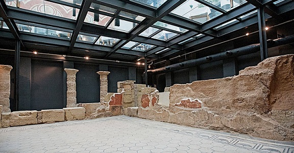
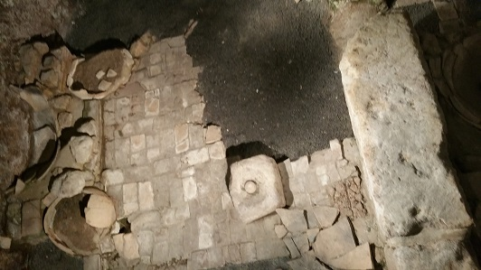

|
VIVIENDAS
|
|||||
Las casas de la Corduba romana eran del tipo insula o villa urbana.
En época republicana los materiales empleados en la construcción de las
casas son muy simples. En el siglo I a.e.c. la calidad de los material
avanza empleándose, tegulae, opus signium, columnas, estucos... Ejemplos de esta época se aprecian la c/ Saravia y San Álvaro. De época
altoimperial ahí restos como los del Palacio Herruzo y palacio
Castejón, generalmente las casas se distribuyen en torno a un gran peristilo,
patio, ornamentado con fuentes y estatuas. Los pavimentos se realizan con mosaicos, como los expuestos en
el Alcázar de los Reyes Cristianos, y de sectilia. Los elementos
decorativos alcanzan un alto nivel. En época bajoimperial se reutilizan
los materiales de las casas y de los edificios públicos, la ciudad se
encoge y aparecen las grandes villae en el campo.
Además con la expansión urbanística fuera de las murallas, las construcciones se agrupan en barrios residenciales, como ocurre con el pagus Augustus, situado al oeste de la ciudad. Por último al otro lado del río, enfrente de la ciudad se documenta el arrabal de Secunda Romana. Uno de los vici mejor conocidos es el vicus occidental, cercano a la puerta de los gallegos, donde se halló la casa de Thalassius. Hacia el norte se hallaba el vicus septrentional donde se han hallado pavimentos musivos en las calles: La bodega, Fray Luis de Granada, Reyes Católicos o ronda de los tejares. Se pueden apreciar los mosaicos de la calle Reyes Católicos, nº 17 y Ronda de los tejares, nº 22. El vicus oriental se ha escavado entorno a la calle Maese Luis. Bajo la plaza de la Corredera se ha hallado un gran estanque y en la Avenida de la victoria un cubiculum con mosaico. En el siglo III estos barrios son arrasados y se ocupan por necrópolis y zonas industriales. En el barrio septentrional al lado del Palacio de la Merced se han hallado los restos de una fundición de cobre. En la avenida Gran Capitán aparecieron los restos de un horno de fundición de plomo. Se puede visitar: La villa romana de Santa Rosa se localiza en la conocida Manzana de Banesto y en el sótano del edificio ubicado en las calles El Algarrobo números 4, 6, 8 y 10 y Cronista Rey Díaz número 3. Su cronología principios del s. IV, abandono primera mitad del siglo V. Una suntuosa villa suburbana de la que destaca su mosaico policromo de tema marino. La domus romana del Hotel Hospes Palacio del Bailío. Domus del siglo I con peristilo en el que se conserva un mosaico y dos habitaciones con paredes de tapial y decoración pintada. Foto: Hotel Hospes
 La casa romana de la plaza Corredera, donde se hallaron los mosaicos de época romana, actualmente expuestos en el salón de los mosaicos del Alcazar Cristiano. En el subterráneo se conservan los restos de un estanque recubierto con pavimento de ladrillo en espiga, y un pozo. Calle y tiendas romanas de la calle Santa Victoria. En el interior del Colegio Santa Victoria se conservan los restos de una calle romana con pórticosde a finales del s. I Las tiendas romanas de la Cruz del Rastro. En el edificio de viviendas de Calle Secretario Carretero, 11. En el primer sótano de este edificio privado de viviendas, se encuentran unas impresionantes cloacas romanas del siglo I. Pertenecían a un barrio en la parte occidental de la Córdoba romana, extramuros del núcleo amurallado. Se conserva una sección con tres tipos de cloacas. También se recogían las aguas procedentes del anfiteatro. La zona industrial romana del siglo IV que se localiza en los sótanos del hotel Eurostars Hotels. Se conserva una taberna con tres cubículas dedicada a la producción y venta de vino, aceite y cereales. Sus muros delimitan con un decumanus, con losas sin pavimentar y cloaca. Ubicado en el vicus oriental de Corduba.
 |
|||||